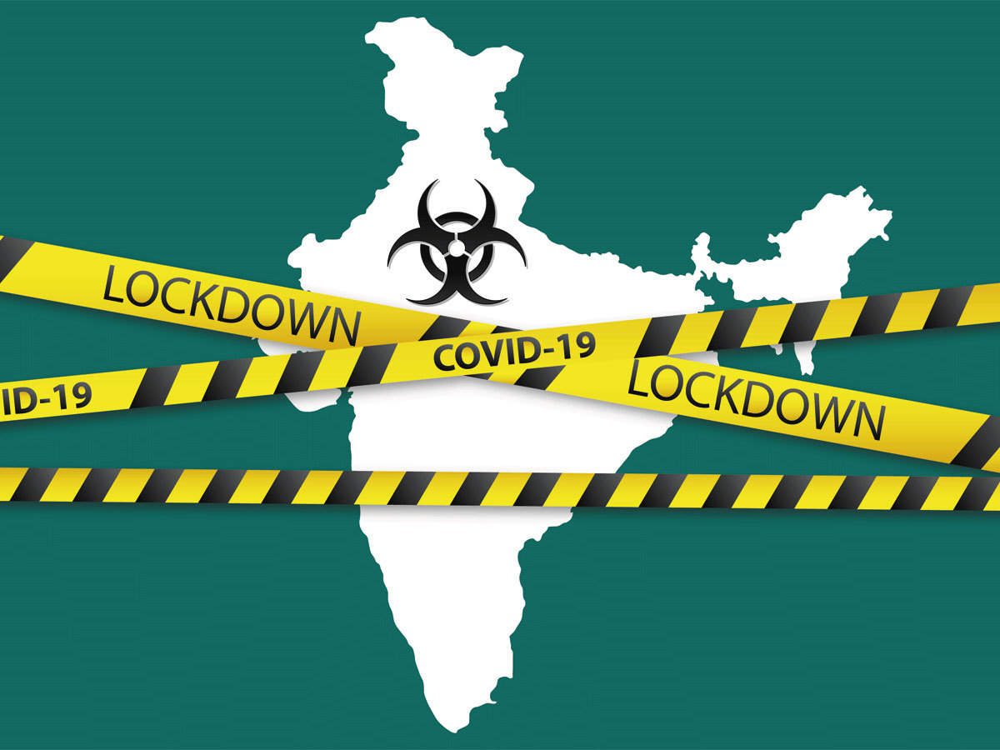

Stay Home ; Stay Safe
The COVID-19 Pandemic
 |
2020 or 404 year error has started off with a crisis after a crisis with the biggest crisis being the Corona-virus pandemic. Scientists , Virologists and Biologists are struggling to find a cure or a vaccine. WHO predicts that a vaccine will not be discovered and distributed to the masses before |
How to prepare for the Lockdown
|  |
"It is better to be a warrior in a garden than to be a gardener in the War" It is always better to prepare for the worst , which in this case , is the lock-down. Even if the lockdown has started the following steps can still be carried out.
|
What to do during the Lockdown ?
|
"Opportunities don't happen , you create them"
It is necessary to keep sanity , both medical and physical , during the lockdown.
|
Courses To - Do

|
"Live as if you were to die tomorrow.Learn as if you were to live forever" A time like the COVID-19 lockdown shall not come again , so it is a must that we use it for our benefit. We must upskill ourselves during this time.
|